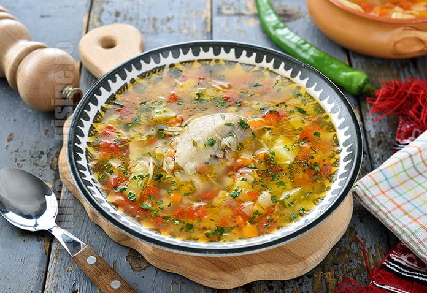

Chicken Soup
This recipe is our go-to for lazy sundays lunches.

Ingredients
- 1kg chicken mix
- Whatever vegetables you want, including: tomatoes, potatoes, onions, pepper, carrots etc.
- Parsley, lovage, dill
- Salt, pepper, borscht
Steps
- Properly clean the chicken
- Add the chicken into a bowl of water and let it boil for 1 hour
- Cut the vegetables into cubes and mince the spices
- Remove the chicken from the broth and remove the bones
- Add the vegetables to the broth and wait for them to soften
- Add the meat back and add the spices and the borscht. Boil for another 15 minutes
- Enjoy!